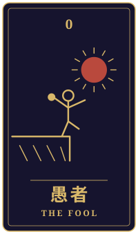
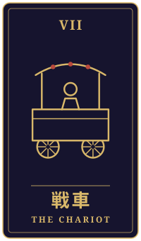

四十七
物語の手前に、ひとつの相談がありました。三枚のタロットをめぐるやりとりを、聞こえたままに書き留めています。
持ち込まれた相談
米菓工場で三十年あまり、ほとんど休まずに働いてきました。皆勤の表彰状は押し入れに十四枚あります。それが私の自慢でした。最近、工場長から課長にならないかと言われています。ありがたい話なのに、すぐに返事ができません。東京にいる息子は週に三日休める働き方を選んで、楽しそうに暮らしています。若い子たちも、頑張りすぎないのが当たり前のようです。私はずっと、休まないことでしか自分を認めてもらえない気がしていました。本当は少し、手を緩めてみたいのです。でも、緩めたら私には何も残らないのではと怖くもあります。この先、どんな気持ちで働いていけばいいのか、見てもらえますか。
タロットの読み解き

過去
愚者・逆位置
過去に出たのは愚者の逆位置です。愚者は本来、新しい道へ軽やかに踏み出す札ですが、逆位置では無計画や軽率さが表に出やすくなります。三十年あまり休まずに働いてこられたことを思うと、この札は少し意外に感じられるかもしれませんね。ただ、逆位置の愚者は、これまでの自分の在り方を一度ふり返ってみてほしい、という合図として読むこともできます。長く続けてきたことには、良さと同時に、言い出しにくい重さも宿ります。

現在
戦車・正位置
現在の戦車は正位置です。戦車は前へ進む力を表しますが、そこには手綱を握る自制も含まれています。ここで大事なのは、進むことと休むことを正反対のものとして考えないことかもしれません。手を緩めるということは、走るのをやめることではなく、馬の速さを自分で選び直すことなのだと思います。皆勤の表彰状が十四枚あるのは、それだけ誠実に向き合ってこられた証しですから、その積み重ねは、これからも消えずに残るものでしょう。

未来
女教皇・正位置
未来に出たのは女教皇の正位置です。直感や静けさ、そして内なる知性を示す札です。課長の話にすぐ返事ができないのは、まだ心の声がはっきり聞こえていないからかもしれません。急いで答えを出すより、静かな時間の中で、本当はどうしたいのかを聴いてみてはどうでしょう。その声は、周りの若い人たちや息子さんの暮らしを羨む気持ちとは、少し違う場所から届くように思います。
最後に
three枚を通して見ると、今の迷いは、働くことをやめるかどうかの問題というより、自分の価値をどこに置くかという問いに近いように感じられます。休まないことでしか認められないと感じてきた長い年月を、そっと労ってあげてもいいのかもしれません。課長の話も、受けるか断るかをカードだけで決めることはできません。ご家族や職場の方と、今の思いを率直に話してみることも、大切な一歩になるはずです。
帰り際の問い急いで答えを出さずに、何が見えてくるのを待つのか。
読み解きは、タロット占い「月夜のアルカナ」が、この相談と引かれた三枚から返したものです。小説は同じ三枚を、別の角度から描いています。相談者は物語のための架空の人物です。相談文・読み解き・短編本文は、いずれも生成AIを使って制作しています。
物語に戻る